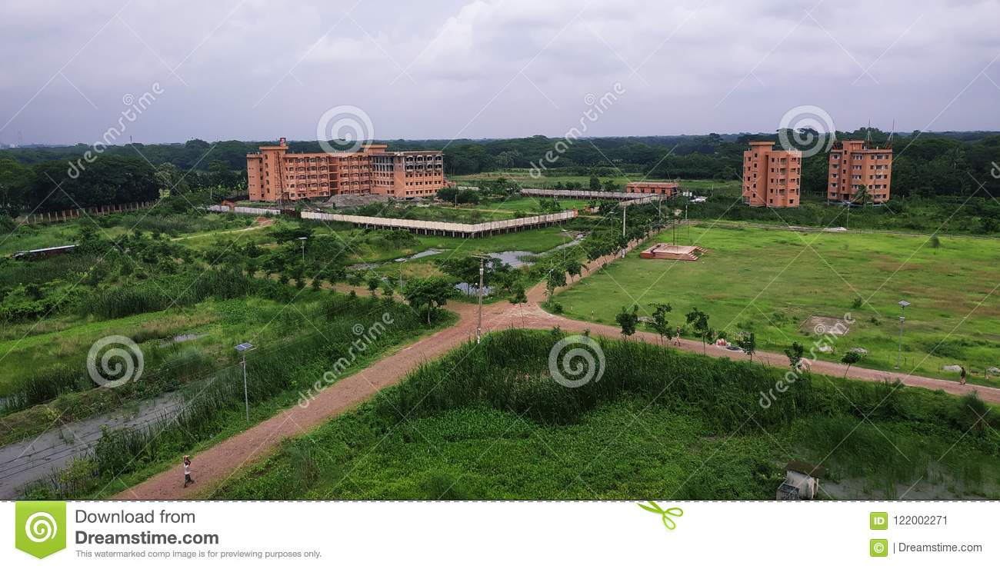
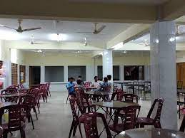

Welcome to My Website

The declaration for establishing a Public University in the then Barishal division
was made by the Founder of Bangladesh, the Father of the nation, Bangabandhu Sheikh Mujibur Rahman in 1973.
Several half-hearted attempts were made by the different political governments after 1980s but it was in 2009
that the establishment of the University got meaningfully underway by the Ministry of Education, and the Honorable President
of the People’s Republic of Bangladesh Md. Zillur Rahman appointed Professor Dr. Md. Harunor Rashid Khan of the Department of Soil,
Water and Environment of the University of Dhaka on 18th February 2010 as the Project Director to establish the University of
Barishal. The law of the University of Barishal has been amended and passed by the National Assembly of Bangladesh on 16th June
2010. Thanks to further initiatives from University Grants Commission and the Ministry of Education, the University was eventually
established by the Honorable Prime Minister Sheikh Hasina through foundation stone laying on 22nd February 2011.
